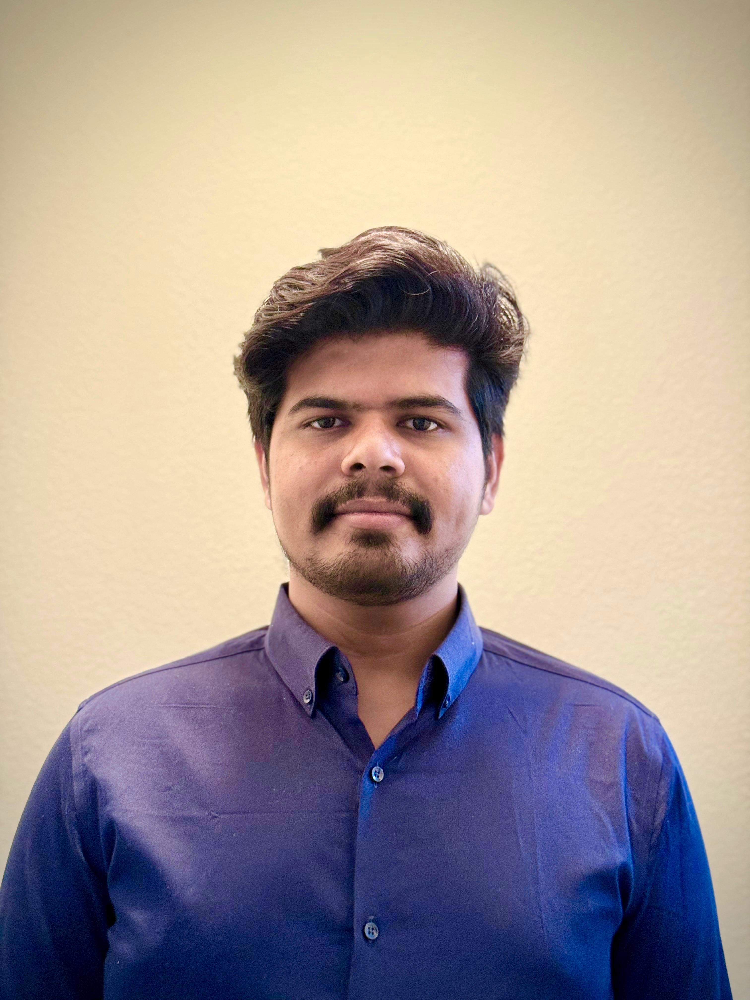

6+ years building enterprise web applications, RESTful microservices, responsive front ends, secure integrations and CI/CD-driven deployments.

Java Full Stack Developer with 6+ years of enterprise software development experience building web applications and RESTful microservices with Java 8/11/17, Spring Boot, Spring MVC, Spring Data JPA, Spring Security, Spring Batch and Hibernate.
Hands-on across React, Redux, Angular, TypeScript, JavaScript, HTML and CSS, with enterprise integration through REST, SOAP, JMS, IBM MQ, Apache Camel and SAML. Experienced with Oracle, SQL Server, Azure SQL, MySQL, Redis, Docker, OpenShift, Kubernetes, Jenkins, Maven and Azure DevOps.
Core technologies reflected in the Java Full Stack resume.
Texas A&M University – Corpus Christi, Texas
Open to Java Full Stack, Spring Boot, Microservices and enterprise application engineering opportunities.